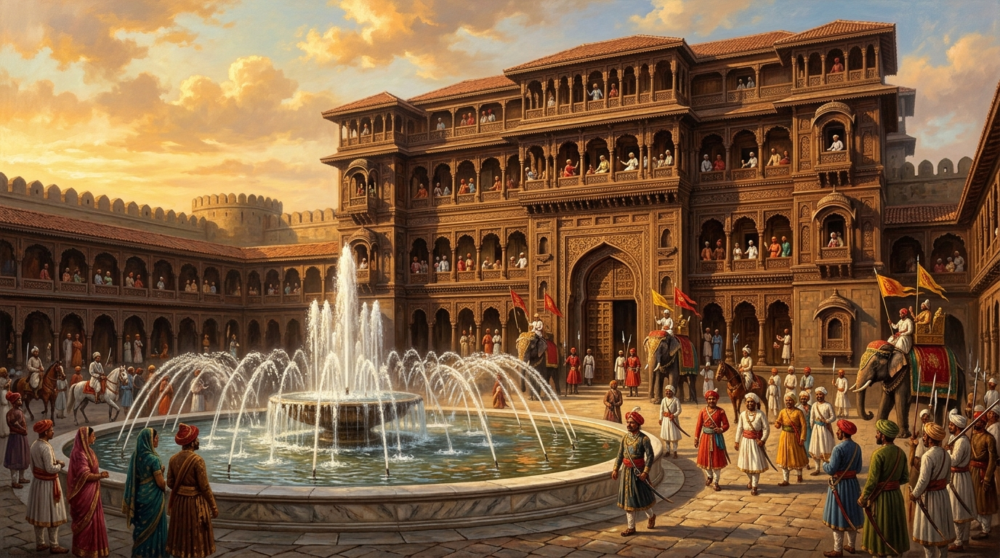
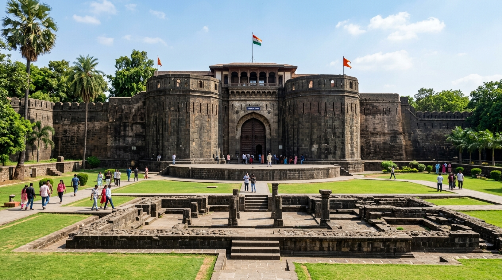
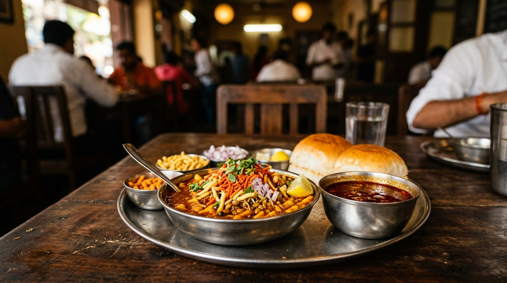

GPS and cached historical stories for Pune are preserved offline. Real-time traffic is paused.
Chronopath Navigator
Step into 300 years of living history, secret wadas & iconic Pune street food
Tanvi Joshi
tanvi.j@example.comThe road is not just distance.
It is a living story.
Discover 300-year Peshwa heritage, secret wadas, and iconic street food along your exact route — with zero advance planning.
First Time in Pune? 1-Tap Ready Routes
No complicated forms needed. Tap any vibe to start immediately:
🏛️ Top 3 Iconic Highlights
Shaniwar Wada ➔ Lal Mahal ➔ Kasba Ganpati
Start in 1 Tap ➔🍲 Famous Street Food Crawl
Kata Kirr Misal ➔ Chitale ➔ Sujata Mastani
Start in 1 Tap ➔💎 8th-Century Hidden Rock-Cut
Pataleshwar Monolith ➔ Shady Garden Walk
Start in 1 Tap ➔Want a customized plan for your hours?
Tell us your hours and budget — we'll calculate the route.
Today's Audio Story Along Route
Real cultural narratives unlocked as you travel
Why Shaniwar Wada's Dilli Darwaza Faces Delhi
Bajirao I angled the primary fortress gate directly North toward Delhi as an audacious statement of Maratha empire ambition...
Popular Curated Trails
Zero research needed • Paced to perfection
Old Pune Misal & Bakarwadi Walk
Kata Kirr ➔ Bedekar ➔ Chitale Bandhu
7 Peths & Secret Wada Balconies
Shaniwar ➔ Nana Wada ➔ Vishrambaug
Traveler Persona & Preferences
Personalizing recommendations for PuneDisplays historical events, audio snippets, and architectural time transitions along your route. Switch off for plain transit navigation.
The Peshwa Legacy & Old Bridges Trail
Travels via historic Lakdi Pul, Tilak Road, and Kasba Peth with 3 narrated audio stories.
Peth Street Food & Chai Crawl
Passes through Sadashiv Peth with stops at Kata Kirr Misal and Sujata Mastani.
Mutha Riverbank & Riverside Road
Avoids dense market honking; breezy avenue with shady banyans and temple views.
Shivaji Road Direct Arterial
Direct straight road. No heritage stories or food detours enabled.
Discover Nearby & Hidden Gems
Within 15 mins of your current trajectoryPataleshwar Rock-Cut Cave Temple
Carved straight into basalt bedrock during the 8th-century Rashtrakuta Dynasty, right under modern Shivajinagar traffic.
Nana Wada & Teakwood Diwan-e-Khas
Built by Nana Phadnavis in 1780. Features intricate carved cypress pillars, secret ceiling chambers, and original Peshwa woodwork.
Vetal Tekdi Secret Quarry & Peacock Vista
The highest natural peak in Pune city limits (2,600 ft). An abandoned quarry pond reflecting the Sahyadri morning mist.
Pune Culinary Story Explorer
Traditions, origin stories & iconic nearby bitesThe Legend of Puneri Misal
How a humble mill-workers' morning fuel became a passionate city obsession.
Origins & Historical Evolution
Born in the late 19th century in Pune's textile mill zones. Workers needed high-protein sprouted moth beans (matki) and fiery spice to endure 12-hour manual shifts. Unlike the tomato-heavy Mumbai misal, traditional Puneri misal incorporates pohe (flattened rice) at the base to absorb the aromatic kat (gravy).
Cultural Meaning in Pune Life
Misal in Pune is not merely breakfast; it is a weekend debating platform. Every Peth resident fiercely defends their local stall. The balance between tikhat (spiciness), farsan crunch, and freshly chopped onions is regarded as a sacred culinary metric.
Regional Kat Variations (Puneri vs Kolhapuri vs Nashik)
- Puneri Misal (Bedekar/Kata Kirr): Slightly sweet tamarind hint in Bedekar, balanced fiery coriander-onion broth in Kata Kirr; served with pav or bread slices.
- Kolhapuri Tambda Kat: Scorching red chili base using Lavangi chilies and mutton-stock broth adaptations.
- Nashik Black Kat (Kala Masala): Roasted coconut and charred onion spices giving an intense smoky dark broth.
Kata Kirr (Karve Road Branch)
📍 1.2 km from your route (9 min auto rickshaw)
Shaniwar Wada Palace
Fortified Seat of the Maratha Empire (1732 CE)Shift eras to view how this location appeared across centuries
The Seven-Storey Palace of Bajirao I
At its height, the palace contained seven majestic wooden storeys, marble courtyards, the Hazari Karanje fountain with 1,000 jets, and housed over 1,000 palace residents.

THEN • 1780 CE (7-Storey Palace & 1,000-Jet Fountain)
NOW • 2026 CE (Stone Ramparts & Gardens)"On the full moon night of August 30, 1773, the young fifth Peshwa Narayanrao fled through these very corridors toward his uncle Raghunathrao's chambers, crying 'Kaka Mala Vachva' (Uncle, save me!). The Gardi guards under Sumer Singh intercepted him before dawn..."
Chronological Milestones
Ceremonial bhoomi pooja conducted on a Saturday (Shaniwar), giving the fort its name.
Political intrigue leading to the installation of Sawai Madhavrao.
A mysterious fire consumed all six upper wooden storeys, leaving only stone plinths.
AI Smart Trip Planner
Natural language itinerary architect for PuneAnalyzing Pune heritage archives & walking graphs...
4 Stops • 3 hrs 50 mins • 4.8 km
Shaniwar Wada Palace & Dilli Darwaza
Best morning light through the north gate spikes. Photography paradise.
Kasba Ganpati & Lal Mahal
Historic Gramdaivat of Pune established by Jijabai in 1630 CE.
Bedekar Tea Stall (Misal & Slice Bread)
Authentic Puneri mild tamarind kat. Fulfills your vegetarian food request.
Pataleshwar Cave Temple (8th Century CE)
Cool subterranean basalt sanctuary. Stunning photographic contrast with sunlight.
Turn Left onto Lakdi Pul (Shivaji Bridge)
Look for the carved stone piers below the roadThe Wooden Bridge of the Retreating Army
"Lakdi Pul was hurriedly constructed from sal wood in 1761 by Nanasaheb Peshwa to receive the battered survivors of the Third Battle of Panipat..."
Journey Summary & Badges
Your Old Pune Exploration CompletedTrail Mastered: Old Pune Heritage Walk
You uncovered 4 historical secrets and supported 2 heritage vendors.
How was the storytelling and route pacing?
Exploration Badges Earned
Level 3 Pune Urban Explorer
Saved to Your Travel Diary

Where to Next in Pune?
Curated based on your history and food appetite
Sinhagad Fort Sunrise Trek & Hot Pithla Bhakri
Climb the historic fort where Tanaji Malusare fought, then savor wood-fire pithla bhakri with the valley mist at 6:30 AM.
UX Rationale & Heuristics Matrix
Comprehensive Evaluation for Course ReviewChronopath Navigator UX Architecture Framework
This interactive prototype bridges utilitarian navigation with rich cultural storytelling. Below is the systematic mapping of User Journey Pain Points, Nielsen Norman Heuristics, and Design Decisions implemented across all screens.
1. Journey Map Pain Points ➔ UI Solutions Matrix
| Journey Stage | User Pain Point | Heuristic / Principle | UI Design Decision in Prototype |
|---|---|---|---|
| 1. Awareness | Unsure if the app provides relevant, personalized experiences rather than generic GPS. | Nielsen #1 & #6 Minimalist Design & Value Clarity | Landing hero with bold value proposition, real Pune heritage photography, 3-step rapid onboarding capsule, and a dedicated First-Time 1-Tap Quick-Start card. |
| 2. Consideration | Too many options, cognitive overload, unclear why an attraction is relevant to the traveler. | Nielsen #7 & #8 Flexibility & Scannable Hierarchy | Curated recommendation cards featuring prominent "Why this fits you" tags, interest-based quick chips, high-res photography thumbnails, and a dedicated "Hidden Gems" section with real interactive map view. |
| 3. Decision | Hard to evaluate whether a route or stop fits available time, budget, and group constraints. | Nielsen #6 Recognition over Recall | Real interactive street & satellite map with route polylines; Route Cards display explicit comparative metadata (Time, Distance, Budget, Highlights); clear "Recommended" badge; interactive Compare Routes modal evaluating 5 dimensions. |
| 4. Delivery / Use | Route changes, limited time, information overload while actively walking or driving. | Nielsen #3 & #1 User Control & Visibility of Status | Live Navigation view on real map with turn-by-turn instruction, moving blue GPS location dot, collapsible bottom sheet, photo insets, proximity-triggered bite-sized audio stories (Lakdi Pul), "Skip / Reroute" buttons, and an active History Layer toggle. |
| 5. Post-Experience | Experience may not match expectations; lack of closure or memory capture. | Nielsen #10 Feedback, Gamification & Closure | Quick 1-tap 5-star rating with sentiment tags, unlockable exploration badges (Peshwa Chronicler, Misal Connoisseur), digital diary library, and contextual "Where to Next" recommendations. |
| 6. Onboarding Freedom (#20) | Mandatory login walls create friction and drop-off before experiencing value. | Nielsen #3 & #7 User Freedom & Flexibility | Frictionless entry with prominent "Continue as Guest (No Login Required)" option, 1-tap Google/Apple logins, and persistent multilingual selector (EN, MR, HI) for cultural accessibility. |
2. Nielsen's 10 Usability Heuristics Applied
Visibility of System Status
Step indicators in onboarding, real-time live GPS pulsing indicator on real map, dynamic audio player scrubber, and multi-step animated skeleton loader during AI itinerary generation.
Match with the Real World
Real interactive Google-style street and satellite map tiles of Pune, authentic Pune culinary terminology (kat, rassa, farsan), real photography, and an interactive Time Travel Era Selector reflecting historical Pune.
User Control & Freedom
One-tap "Reset" buttons in Preferences, drag-and-drop reorder / delete controls for itinerary stops, Simple Mode vs Explorer Mode toggle, and prominent "Skip Story" / "Reroute" buttons in live navigation.
Consistency & Standards
Uniform color tokens (Primary Teal #1B6B73, Accent Amber #E58A2B), standard 8-pt spacing grid, consistent card elevation, and recognizable iconography throughout.
Error Prevention
Sliders with constrained safe bounds (1h-10h), segmented buttons for budget classes, and automatic recalculation of arrival times when removing itinerary waypoints.
Recognition over Recall
Visual interest chips instead of blank inputs, "Why this fits you" explicit rationale on every stop, and the Side-by-Side Route Comparison modal.
Flexibility & Efficiency of Use
1-tap Quick-Start Journeys for beginners, pre-filled prompt chips for fast AI trip planning, List / Map toggle in Discover, playback speed toggles (1.0x / 1.25x / 1.5x), and keyboard navigation focus rings.
Aesthetic & Minimalist Design
Progressive disclosure: complex architectural history is tucked into collapsible accordions and audio players, keeping screens clean, visual, and scannable.
Help Users Recover from Errors
Simulated offline network banner with immediate "Retry Connection" action and fallback to cached local heritage stories.
Help & Documentation
Interactive UX Annotation system with 19 callouts explaining the UX rationale behind every major interface widget.
3. Accessibility (WCAG 2.1 AA) Compliance Audit
Primary Teal (#1B6B73) on White (#FFFFFF) provides a 5.4:1 contrast ratio, exceeding WCAG AA requirement of 4.5:1 for body copy.
All clickable buttons, chips, and icon triggers are engineered to a minimum of 44px × 44px for thumb friendliness on mobile.
Status indicators pair color with icons and explicit text tags (e.g. "🟢 Very Quiet", "★ Recommended").
Every audio narration includes a readable, expandable transcript drawer for hearing-impaired users or quiet environments.
4. Design System Tokens
Color Palette
Deep Teal (Primary)
Warm Amber (Accent)
Off-White (Canvas)
Slate Dark (Text)
Typography & 8-pt Spacing
- Display Headings: Plus Jakarta Sans / Playfair Display, 24px - 32px, Bold 700
- Section Subheads: Plus Jakarta Sans, 16px - 18px, SemiBold 600
- Body & Metadata: 13px - 14px, Regular 400 & Medium 500, line-height 1.5
- Spacing Scale: 4px (0.5x), 8px (1x), 16px (2x), 24px (3x), 32px (4x), 48px (6x)